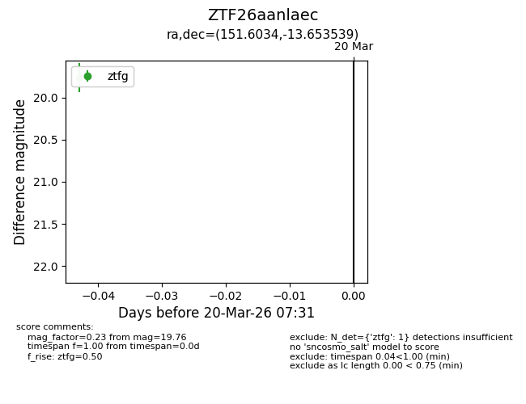
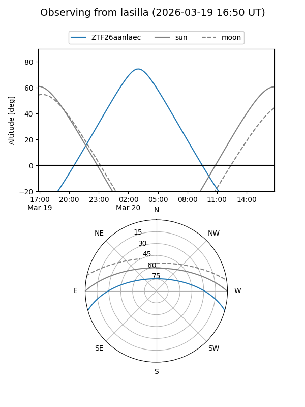
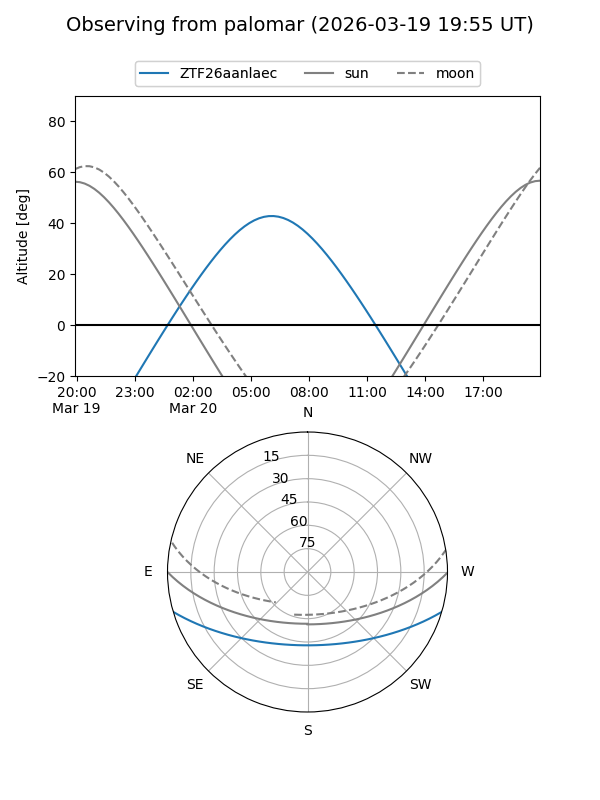

ZTF26aanlaec
Target ZTF26aanlaec at 2026-03-20 07:33
Aliases and brokers:
FINK: link
Lasair: link
ALeRCE: link
alt names
ZTF26aanlaec (ztf,fink_ztf)
Coordinates:
equatorial (ra, dec) = 151.6034,-13.65354
equatorial (HMS+DMS) = 10:06:24.81,-13:39:12.74
galactic (l, b) = (253.2194,+32.85561)
Flags:
Photometry:
last ztfg=19.76
1 ztfg detections
Lightcurve

Visibility


Additional plots